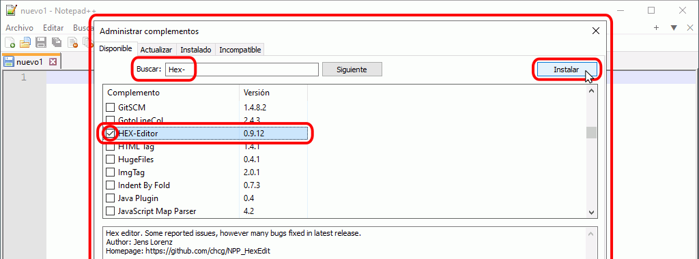
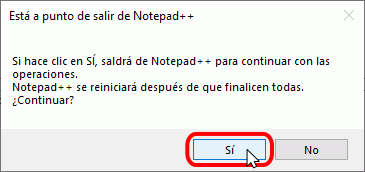
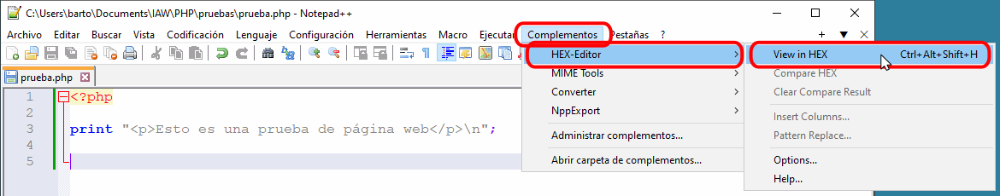
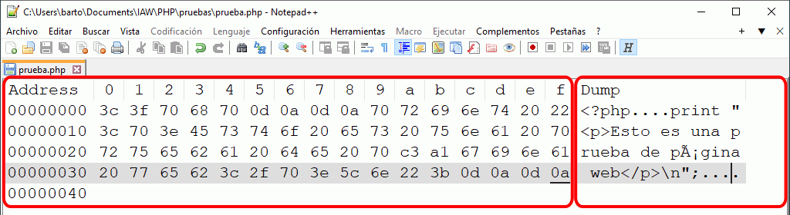
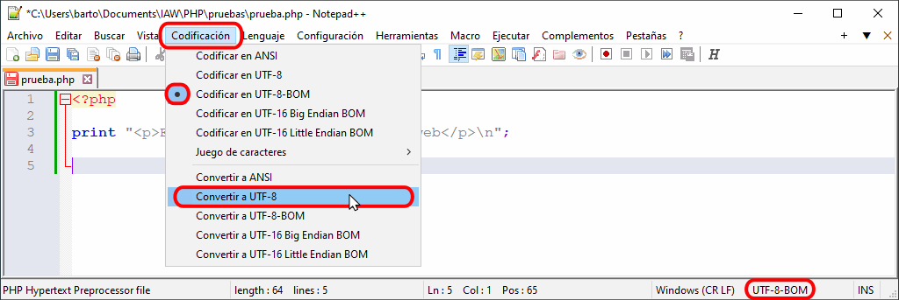

Además de un paquete WAMP como XAMPP y un editor como Visual Studio Code, es conveniente instalar otros programas:
Extensión Html Validator
Html Validator añade a Firefox una pestaña en las herramientas de Desarrollador Web con herramientas útiles para el desarrollo de páginas web. Html Validator está incluida en Firefox Add-ons.
Actualmente (noviembre de 2021), la versión más reciente de Html Validator para Firefox es la versión 0.9.9.5, publicada el 4 de agosto de 2021. También está disponible para Chrome.
En la lección Complementos de Firefox se comenta el uso de esta extensión en Firefox y en la lección Extensiones de Google Chrome se comenta el uso de esta herramienta en Google Chrome..
Editor de texto sin formato: Notepad++
Notepad++ es un editor de texto sin formato que reconoce multitud de sintaxis de lenguajes de programación y permite trabajar con diferentes codificaciones (UTF-8, etc.).
Notepad++ está disponible en versiones para 32 bits y para 64 bits.
Actualmente (noviembre de 2021), la versión más reciente es la versión Notepad++ 8.1.9, publicada el 21 de octubre de 2021.
En cdlibre.org hay una sección dedicada a editores de programación, desde la que se pueden descargar las últimas versiones disponibles para 64 bits.
Plug-in HEX-Editor de Notepad++
El plug-in HEX-Editor permite ver y editar todos los bytes de un fichero.
El plug-in Hex-Editor original se encuentra en el repositorio de plug-ins de SourceForge, pero El administrador de plug-ins de Notepad++ utiliza el fork HexEdit que se encuentra en GitHub.
Actualmente (noviembre de 2021), la versión más reciente es la versión Hex-Editor 0.9.10, publicada el 29 de agosto de 2021.
Para instalar HEX-Editor:
- Abra el menú

- En el Administrador de plug-ins marque la casilla correspondiente a Hex-Editor (puede usar el cuadro de búsqueda) haga clic en Instalar.

- La instalación requiere reiniciar Notepad++:

- Tras el reinicio, compruebe que HEX-Editor está disponible a través del menú

Para ver los códigos hexadecimales de un fichero:
- Abra en Notepad++ el fichero.
- Elija la opción de menú

- La pantalla se dividirá en dos partes: en la parte izquierda podemos ver los códigos hexadecimales y en la parte derecha el texto

Modificar juego de caracteres de un fichero
Notepad++ permite cambiar el juego de caracteres de un fichero mediante el menú . En particular, se puede eliminar la marca de orden de bytes de un archivo UTF-8 mediante el menú :

Editor de expresiones regulares
En la lección Expresiones regulares se indican varias páginas web en la que se pueden practicar expresiones regulares.
Regular Expression Editor es un editor de expresiones regulares.
Desde noviembre de 2015 la página web del programa ya no está disponible (ni siquiera la de la empresa que lo publicó). La última versión publicada fue versión Regular Expression Editor 1.4.0, publicada el 13 de marzo de 2006.
En cdlibre.org hay una sección dedicada a expresiones regulares, desde la que se puede descargar este y otros programas similares.
Utilizar Regular Expression Editor
Regular Expression Editor permite comprobar expresiones regulares compatibles con Perl. La ventana del programa contiene tres cajas de texto:
- la caja de texto en la el usuario se escribe el patrón (no hay que escribir los delimitadores)
- la caja de texto en la que el usuario escribe la cadena a comparar con el patrón
- la caja de texto que muestra el resultado de la comparación

En caso de que la cadena coincida con el patrón, en la caja de texto del resultado se muestra la coincidencia:

En caso de que la cadena no coincida con el patrón, en la caja de texto del resultado no se muestra nada:

Marcar la casilla "Ignore case" es equivalente a incluir el modificador "i" (no distinguir entre mayúsculas y minúsculas).

Editor de archivos .po
Poedit es un programa para la creación y edición de ficheros .po.
La última versión libre publicada fue la versión Poedit 1.5.7, publicada el 5 de julio de 2013. Las versiones posteriores ya no son libres, aunque siguen siendo gratuitas (con algunas características exclusivas de la versión de pago). Actualmente (noviembre de 2021), la versión más reciente es la versión Poedit 3.0.6387, publicada el 21 de junio de 2021.
En cdlibre.org hay una sección dedicada a herramientas de traducción, desde la que se puede descargar la última versión libre disponible.
Utilidades para MySQL
MySQL ofrece MySQL Workbench para el diseño de bases de datos.
Actualmente (noviembre de 2021), la versión más reciente es la versión MySQL Workbench 8.0.27, publicada el 19 de octubre de 2021.
En cdlibre.org hay una sección dedicada a MySQL, desde la que se puede descargar las últimas versiones disponibles.
Utilidades para SQLite
DB Browser for SQLite permite administrar las bases de datos creadas con SQLite. La última versión disponible actualmente (noviembre de 2021) es la versión DB Browser for SQLite 3.12.2 (64 bits), publicada el 17 de mayo de 2021.
SQLECTRON permite administrar las bases de datos creadas con SQLite. La última versión disponible actualmente (noviembre de 2021) es la versión SQLECTRON 1.37.1, publicada el 16 de agosto de 2021. Aunque en marzo de 2018 el autor anunció que dejaba de desarrollar este programa, se han seguido publicando nuevas versiones.
En cdlibre.org hay una sección dedicada a Bases de datos, desde la que se puede descargar las últimas versiones disponibles.